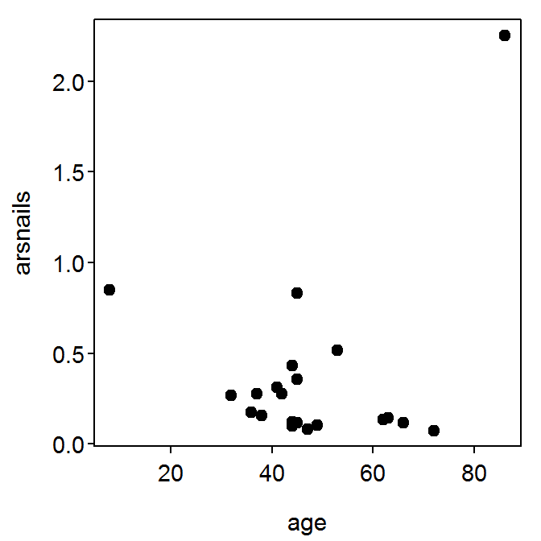

Measurements of the levels of arsenic in the drinking water, cooking water, and toenail samples, as well as related covariates, were measured on 21 individuals with private wells in a New Hampshire community. The variables below were recorded in the https://github.com/droglenc/NCData/blob/master/Arsenic.csv file located on the R Resources web page.
age: Age (yrs) of personsex: Sex of personusedrink: Household well used for drinking – A=“\(<\frac{1}{4}\)”, B=“\(\approx\frac{1}{4}\)”, C=“\(\approx\frac{1}{2}\)”, D=“\(\approx\frac{3}{4}\)”, E=“\(>\frac{3}{4}\)”usecook: Household well used for cooking – A=“\(<\frac{1}{4}\)”, B=“\(\approx\frac{1}{4}\)”, C=“\(\approx\frac{1}{2}\)”, D=“\(\approx\frac{3}{4}\)”, E=“\(>\frac{3}{4}\)”arswater: Arsenic in water (ppm)arsnails: Arsenic in toenails (ppm)In this handout, we will consider the questions below.
> library(NCStats)
> setwd("C:/aaaWork/Web/GitHub/NCMTH107/resources/class/HOs")
> Ars <- read.csv("Arsenic.csv")
> str(Ars)'data.frame': 21 obs. of 6 variables:
$ age : int 44 45 44 66 37 45 47 38 41 49 ...
$ sex : Factor w/ 2 levels "F","M": 1 1 2 1 2 1 2 1 1 1 ...
$ usedrink: Factor w/ 5 levels "A","B","C","D",..: 5 4 5 3 2 5 5 4 3 4 ...
$ usecook : Factor w/ 2 levels "B","E": 2 2 2 2 2 2 2 2 1 2 ...
$ arswater: num 0.00087 0.00021 0 0.00115 0 0 0.00013 0.00069 0.00039 0 ...
$ arsnails: num 0.119 0.118 0.099 0.118 0.277 0.358 0.08 0.158 0.31 0.105 ...> view(Ars) age sex usedrink usecook arswater arsnails
1 44 F E E 0.00087 0.119
4 66 F C E 0.00115 0.118
9 41 F C B 0.00039 0.310
12 45 F A E 0.04600 0.832
13 53 M E E 0.01940 0.517
14 86 F E E 0.13700 2.252> plot(arsnails~age,data=Ars,pch=19)
> cor(Ars$arsnails,Ars$age)[1] 0.2807416> ( freq.tbl <- xtabs(~sex+usedrink,data=Ars) ) usedrink
sex A B C D E
F 1 0 2 3 7
M 0 1 0 0 7> percTable(freq.tbl,margin=1,digits=1) usedrink
sex A B C D E Sum
F 7.7 0.0 15.4 23.1 53.8 100.0
M 0.0 12.5 0.0 0.0 87.5 100.0> percTable(freq.tbl,margin=2,digits=1) usedrink
sex A B C D E
F 100 0 100 100 50
M 0 100 0 0 50
Sum 100 100 100 100 100> percTable(freq.tbl,digits=1) usedrink
sex A B C D E Sum
F 4.8 0.0 9.5 14.3 33.3 61.9
M 0.0 4.8 0.0 0.0 33.3 38.1
Sum 4.8 4.8 9.5 14.3 66.6 100.0